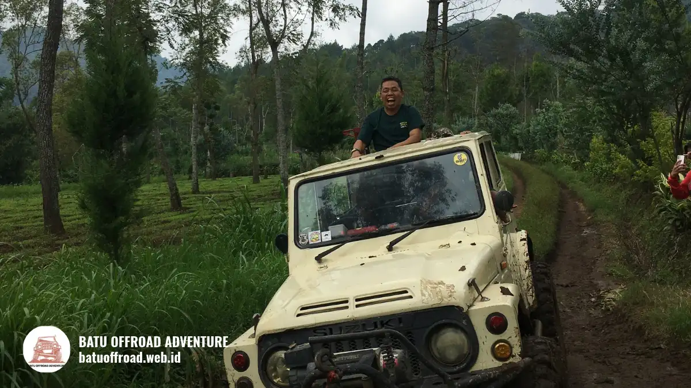

Rute ke Coban Rondo Langkah demi Langkah untuk Mobil dan Bus
Rute ke Coban Rondo dimulai dari jalur Batu menuju Pujon, lalu mengikuti petunjuk ke arah Coban Rondo setelah Pandesari. Waktu tempuh dari Kota Malang sekitar 45–60 menit, sedangkan dari Batu sekitar 30–45 menit. Akses bus tergolong luas. Panduan ini kami susun dari perjalanan survei tim Batu Offroad.
Batu Offroad menyusun panduan ini dari sudut pandang tim kami saat survei lapangan. Panduan ini membantu sopir dan koordinator rombongan memahami jalur, titik yang perlu diwaspadai, dan jam berangkat yang disarankan. Jika Anda membawa rombongan, baca juga artikel utama kami tentang Offroad Coban Rondo Jeep 4x4 untuk Rombongan Bus Besar.
Sebelum Berangkat
Pastikan koordinator sudah memegang titik kumpul, jumlah kendaraan, dan perkiraan jumlah peserta. Untuk rombongan bus, informasikan juga jumlah dan ukuran bus. Titik kumpul kami: titik kumpul disesuaikan dengan lokasi rombongan, umumnya di area Batu atau titik yang disepakati saat booking. Untuk mengatur jadwal bersama tim kami, hubungi WhatsApp +62 812-3398-9707 sebelum hari keberangkatan.
Langkah demi Langkah dari Titik Kumpul
- Mulai dari titik kumpul. Landmark pertama yang terlihat adalah jalan utama menuju Batu atau Pujon, sesuai titik berangkat rombongan.
- Ikuti jalur utama dari Batu menuju Pujon. Jalur ini merupakan jalur utama yang juga digunakan bus Malang–Kediri, dengan kondisi jalan umumnya baik namun memiliki tanjakan dan tikungan di beberapa titik.
- Di Pandesari, ikuti petunjuk ke arah Coban Rondo. Patokan pertigaan: Patung Sapi Pujon. Dari pertigaan ini, masuk ke jalan menuju Coban Rondo.
- Sebelum masuk kawasan, perhatikan jalan masuk yang lebih sempit dibanding jalan utama. Bus besar sebaiknya melaju perlahan dan mengikuti arahan koordinator atau petugas setempat. Jarak dari Patung Sapi ke gerbang utama sekitar 4 km.
- Tiba di kawasan Coban Rondo. Area parkir tersedia di kawasan wisata, dengan kapasitas yang tergolong luas dan mampu menampung kendaraan dalam jumlah besar.

Jeep offroad melintasi jalur kawasan hutan pinus menuju Coban Rondo
Catatan Khusus untuk Bus
Akses bus tergolong luas, tetapi rombongan bus tetap perlu memperhatikan titik rawan: tikungan dan tanjakan jalur Pujon serta jalan masuk menuju gerbang Coban Rondo. Kami menyarankan bus berangkat pukul 06.30–07.30 WIB agar terhindar dari kepadatan di jalur utama, terutama pada akhir pekan.
Untuk Mobil Pribadi
Rute yang sama berlaku untuk mobil pribadi. Kendaraan yang bisa masuk ke area kegiatan: mobil pribadi, minibus, dan bus sesuai ketentuan petugas kawasan. Kondisi parkir untuk mobil pribadi: area parkir tersedia di kawasan wisata dan umumnya cukup luas.
Jam Berangkat dan Musim
Berangkat pagi membuat perjalanan lebih nyaman dan jalur lebih sepi. Pada musim hujan, sekitar November sampai Maret, jalur dan area sekitar air terjun bisa licin, sehingga tambahkan waktu di perjalanan. Waktu berangkat yang disarankan: pukul 06.30–07.30 WIB untuk rombongan, atau pukul 07.00–08.00 WIB untuk keluarga dan perjalanan santai.
Pertanyaan yang Sering Diajukan
-
Berapa lama perjalanan dari titik kumpul ke Coban Rondo?
Waktu tempuh sekitar 45–60 menit dari Kota Malang atau 30–45 menit dari Batu, tergantung kondisi jalan dan jam keberangkatan. -
Apakah bus bisa masuk sampai area kegiatan?
Akses bus tergolong luas. Titik turun bus: area parkir kawasan Coban Rondo. -
Apakah ada titik parkir khusus untuk bus?
Area parkir bus: area parkir kawasan Coban Rondo, dengan kapasitas yang tergolong luas. -
Apakah rute ini bisa dipakai untuk mobil pribadi?
Bisa. Kendaraan yang masuk: mobil pribadi, minibus, dan bus sesuai ketentuan petugas kawasan.
Ingin Rombongan Anda Datang dengan Rute yang Sudah Kami Uji?
Pastikan jadwal keberangkatan terencana rapi agar kegiatan rombongan berjalan lancar tanpa kendala macet di jalur pegunungan.
Kirim tanggal dan jumlah peserta ke WhatsApp +62 812-3398-9707. Lihat juga paket layanan kami serta panduan lengkap offroad Coban Rondo jeep 4x4 untuk rombongan.
Artikel Terkait